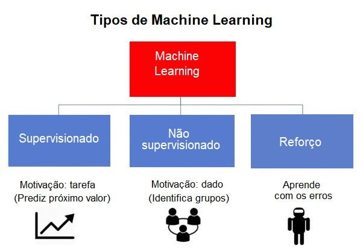

Aprendizado por Reforço (do inglês Reinforcement Learning) é um tipo de aprendizado de máquina onde um agente aprende a tomar decisões por tentativa e erro, recebendo recompensas ou punições a cada ação.
O objetivo do agente é maximizar a soma das recompensas ao longo do tempo. Isso é feito através de um processo iterativo, onde o agente ajusta sua política com base no feedback recebido.

Como Funciona?
O Aprendizado por Reforço funciona em ciclos onde o agente:
Observa o Estado Atual: Percebe o ambiente.
Escolhe uma Ação: Decide o que fazer.
Executa a Ação: Age e altera o ambiente.
Recebe uma Recompensa: Recebe feedback (positivo ou negativo).
Atualiza sua Estratégia: Aprende com o resultado.
Esse ciclo contínuo permite que o agente melhore sua tomada de decisão com o tempo.
Aplicações incluem robôs, jogos, sistemas de recomendação, entre outros.
Componentes Principais
Agente: Quem toma as decisões.
Ambiente: Onde o agente atua.
Ações: As decisões possíveis.
Recompensas: Feedback recebido.
Política: Estratégia de decisão.
Função de Valor: Mede quão bom é um estado.
Exemplo Prático
Imagine um agente jogando um jogo de labirinto. Ele aprende a sair mais rápido evitando punições e buscando recompensas.
Jogos: Como AlphaGo e xadrez.
Vídeo games: Como Atari e outros clássicos.
Robótica: Robôs que aprendem a andar ou agarrar objetos.